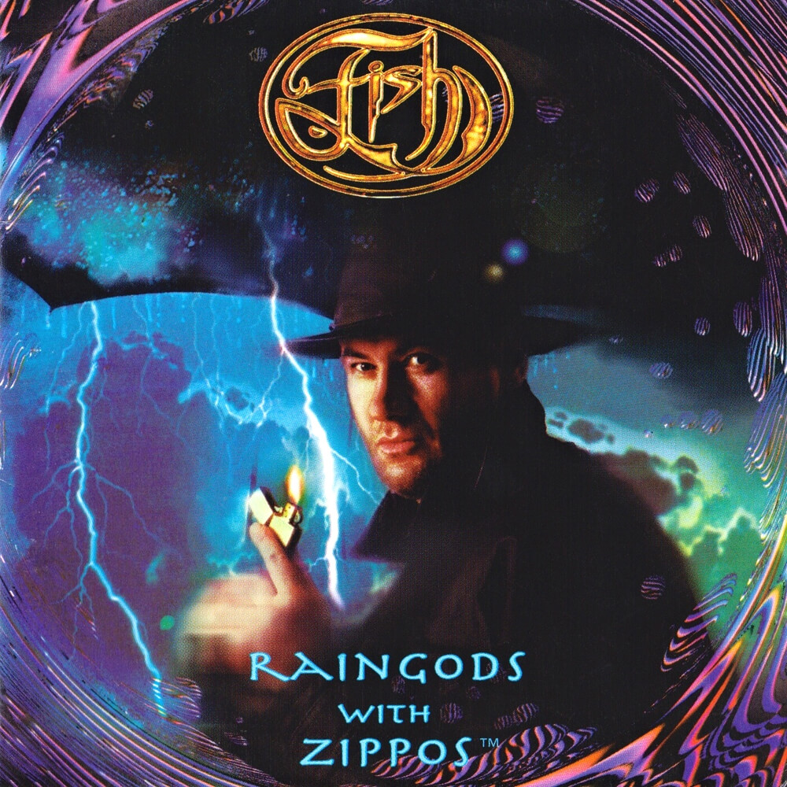

Richard Paul Astley was born on the 6th of February, 1966. He is a British singer, songwriter, and radio personality. He rose to fame through his association with the production trio Stock Aitken Waterman; his 1987 recording of their song "Never Gonna Give You Up" was a number 1 hit single in 25 countries, winning the 1988 Brit Award for Best British Single. His 1988 single "Together Forever" became his second single to top the US Billboard Hot 100, and was one of his eight songs to reach the top 10 on the UK singles Chart. By the time of his retirement in 1993, Astley had sold approximately 40 million records worldwide. Rick Astley made a comeback in 2007, becoming an internet phenomenon when the music video for "Never Gonna Give You Up" became integral to the meme known as "rickrolling". Astley was voted ‘Best Act Ever’ by internet users at the MTV Europe Music Awards 2008, and his 2016 album 50 debuted in the UK at No. 1.


Rick Astley’s childhood seems like any other person’s typical childhood, as he grows up in a family of 4. His dad, mom, sister, and himself.
Rick Astley's Many awards and Nominations.

Rick Astley's Singing Career is what he is most famous for, as he wrote many famous songs, with some songs still being played until this day.
When he was 18, Astley came to the attention of Pete Waterman of the British songwriting/production team Stock-Aitken-Waterman, the hitmakers for Bananarama, Kylie Minogue

| 1996 | 1971 | 1973 | 1984 | 1987 |
|---|---|---|---|---|
| Rick is born | His parents divorced | Rick starts singing in church choir | Rick starts playing drums | Never gonna give you up is born |
Born in the small town of Newton-le-Willows, Lancashire, England. Rick Astley suffered briefly through piano lessons, but was not particularly invested in the instrument and soon quit. As he told Miller, he "was dragged into the choir, like anybody else who could half sing, and into school plays." But as an adolescent Astley reserved his true musical enthusiasm for the drums, and he formed a band called Give Way with friends when he was about fifteen years old. "We never did play many gigs…We were too young, and none of us could drive."
After Astley had learned to drive, he played drums for a group named FBI. When FBI found itself playing in small local clubs, Astley found himself writing songs. His fellow band members urged him to fight his shyness and sing them; they liked the results so much that they hired another drummer so Astley could devote himself to vocals. Late in 1985 the production team of Mike Stock, Matt Aitken, and Pete Waterman--who also handle artists such as Bananarama and Samantha Fox--were part of one of Astley's audiences. Waterman recounted his reaction in People magazine: "He had a phenomenal voice. It was like hearing a 40-year-old black man while seeing this 19-year-old white pimply kid."


After some polishing up, "Whenever You Need Somebody" was recorded and released. In addition to the already famous "Never Gonna Give You Up". Astley scored hits with "Together Forever","It Would Take a Strong, Strong Man," and the title track. Critics had praise for his striking voice, but many complained that the songs lacked something. Astley however, is untroubled by their opinion, explains his own philosophy about his work as something that is fun, and says that he is not trying to put any messages across because he doesn't think politics and pop music mix. He also states that it doesn't seem right to make people aware of your own views.


Rick Astley has won many awards and nominations as well as created one of the msot well known memes in the history of this world.
Rick Astley's Career came with many achievements, and many published songs. 4 of which, that were mentioned in Accomplishments were the more famous ones. Here is chart with 10 songs that Rick Astley wrote, excluding"Never Gonna Give You Up", and the year they were released.
| Song | Year of publication |
|---|---|
| She wants to dance with me | 1988 |
| Take Me To Your Heart | 1988 |
| Hold Me In Your Arms | 1988 |
| Giving Up On Love | 1988 |
| Crying For Help | 1991 |
| Hopelessly | 1993 |
| Angels On My Side | 2016 |
| Whenever You Need Somebody | 1987 |
| Together Forever | 1987 |
| When I Fall In Love | 1987 |
1993, Astley retired from the music industry at 27, deciding that family life was more important. During this time out of the music business, he raised his daughter Emilie, borin in 1992. For much of the 1990's to the early 2000's, Astley remained out of the spotlight. He later said this was due to his growing frustration with the business side of things. During this period, he co-wrote "Mission Statement", a track for former Marillion singer Fish's 1999 solo album, "Raingods with Zippos".

Child playing with cubes was uploaded to DreamsTime.com https://www.dreamstime.com/child-plays-cubes-icon-element-toddler-development-icon-mobile-concept-web-apps-glyph-child-plays-cubes-ico-image126054241
graduation hat was uploaded to CLIPARTIX.COM https://clipartix.com/graduation-hat-clipart-image-53852/
Career Icon was uploaded to UXwing.comhttps://uxwing.com/career-icon/
Socil Influence Icon was uploaded to TheNounProject.com on May 13, 2018. https://thenounproject.com/icon/idol-1748431/
All images in the Accomplishments are directly taken from the music videos.
all textual info is from Wikipedia https://en.wikipedia.org/wiki/Rick_Astley and MusicanGuide.com https://musicianguide.com/biographies/1608001319/Rick-Astley.html